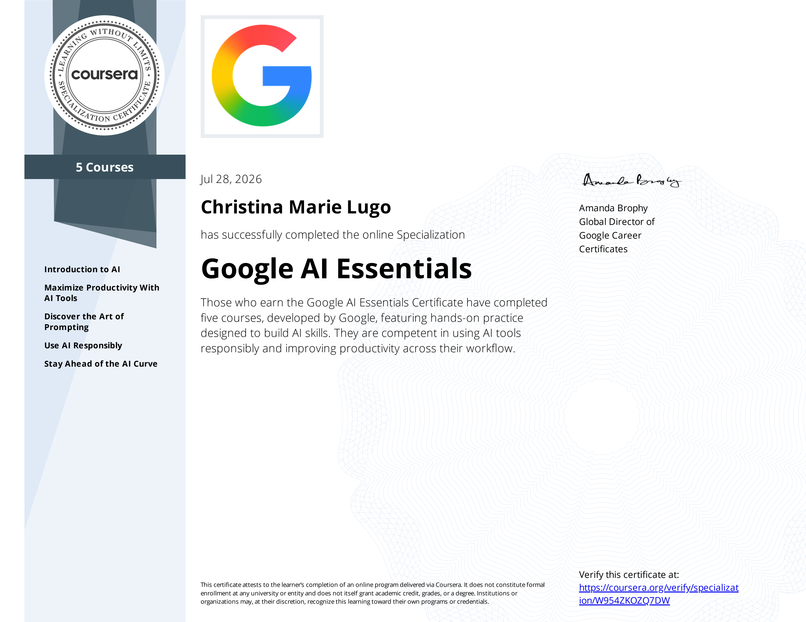
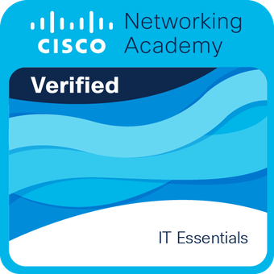
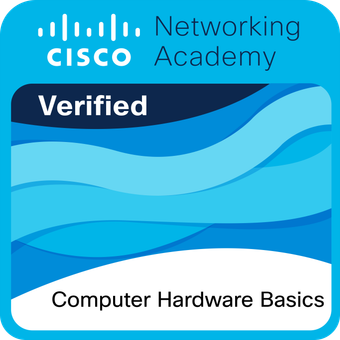
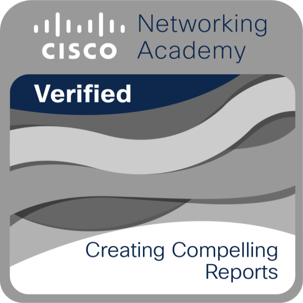

Christina Lugo
About Me
Dependable customer service professional with 10 years of fast-paced problem-solving experience, transitioning into Information Technology. A naturally hands-on technician who builds and customizes personal gaming PCs, bringing a strong baseline of hardware troubleshooting, adaptability, and user communication to entry-level IT Support.
Education & Certifications
- Google AI Essentials Specialization – Google / Coursera (Completed July 2026)
- CompTIA A+ Certification Training – Currently Enrolled, Per Scholas
- Get Started with Microsoft 365 Copilot – Microsoft Learn (Completed July 2026)
- High School Diploma – Brooklyn, NY
Badges & Achievements

Google AI Essentials
Google / Coursera

IT Essentials
Cisco Networking Academy

Computer Hardware Basics
Cisco Networking Academy

Creating Compelling Reports
Cisco Networking Academy
Featured Projects & AI Simulations
DDoS Incident Response & AI Collaboration Simulation
Simulated a live Junior Network Engineer response to a TCP SYN Flood DDoS attack targeting game infrastructure. Used Generative AI to rapidly parse firewall/flow logs, accelerate response planning, and design an actionable 3-day mitigation roadmap.
- Log Anomaly Identification: Recognized TCP SYN flag ([S]) floods originating from distributed IPs at 14,000–21,000 packets/sec on port 80.
- Human-in-the-Loop Optimization: Refined raw AI output to add enterprise-level technical mitigations (SYN cookies, BGP RTBH, cloud scrubbing) and Cisco/Linux CLI block rules.
- Resource & Operations Management: Iteratively prompted AI to construct a 3-day team timeline delegating tasks across 10 engineers, alongside player morale & communication strategies.
- Efficiency Impact: Estimated 2–3 hours saved during incident analysis by leveraging AI for initial triage while validating outputs with core networking knowledge.
Click to view full prompt logs & reflection report
Prompting Strategy & Iteration Log
Prompt 1 (Initial Analysis): Directed AI as a Junior Network Engineer to analyze raw TCP flow logs, identify attack anomalies, evaluate bandwidth/resource impact, and propose immediate CLI fixes.
Prompt 2 (Refinement & Operations): Iterated on basic AI output to expand mitigation steps (SYN cookies, BGP blackholing, Cloud scrubbing), build a 10-engineer 3-day response schedule, and draft player morale protection plans.
Reflection & Efficiency Gain
Utilizing AI for log parsing saved an estimated 2 to 3 hours of manual log review. While AI generated a fast baseline draft, technical human oversight was critical to ensure firewall commands, team allocations, and enterprise network architecture were realistic and accurate.
In-Person PC Teardown & Hardware Reassembly Lab
Collaborated in a technical workgroup to perform a complete hardware disassembly, component inspection, and full reassembly of desktop computers in a live lab environment.
- ESD & Pre-Check Protocols: Enforced electro-static discharge (ESD) safety guidelines using anti-static wrist straps and verified baseline system power prior to disassembly.
- Component Identification & Care: Systematically removed and inspected core components—including CPU, RAM, storage drives, power supply unit (PSU), and motherboard.
- Precision Reassembly: Reinstalled components according to manufacturer specification, ensuring correct cable routing, pin alignment, and seating for all expansion hardware.
- POST & System Verification: Booted assembled systems to confirm Power-On Self-Test (POST) success and navigated BIOS/UEFI settings to confirm hardware detection.
Click to view team workflow & safety summary
Team Dynamics & Lab Workflow
Workgroup Pair: Mikail & Christina
Divided tasks effectively between physical disassembly, component specification logging, and diagnostic testing. Documented each step of the build to ensure proper re-cabling and component integrity.
Lab Presentation & Documentation
Access our team's full presentation slides:
Power Supply Unit (PSU) Architecture & Pinout Presentation Lab
Collaborated with a technical group to research, map, and present power supply unit (PSU) architecture, connector pinouts, and voltage delivery rails for desktop computing environments.
- PSU Pinout Analysis: Mapped standard 24-pin ATX motherboard power connectors, 4/8-pin CPU power rail specs, and PCIe expansion power lines.
- Voltage Rails & Specs: Documented target voltage tolerances (+3.3V, +5V, +12V) and safety protocols for power testing and troubleshooting.
- Visual Diagramming & Slides: Created structured technical presentation slides detailing PSU cabling, modular configurations, and form factor standards.
Click to view PSU presentation & documentation
PSU Architecture Presentation
Access our team's full presentation slides and connector diagrams:
Network Architecture & Diagramming Lab (IPLab 132.4.2)
Worked with a collaborative technical team to design, map, and document network topologies and IP addressing schemes based on functional lab specifications.
- Topology Design & Mapping: Analyzed network requirements and developed clear visual architectural diagrams illustrating device connections and traffic flow.
- IP Addressing Allocation: Assigned static and dynamic IP addressing schemes to ensure proper subnet segmenting and network connectivity.
- Technical Documentation: Documented network configuration parameters, interface mapping, and topology diagrams for group presentation and verification.
- Group Collaboration: Partnered with team members to peer-review network layouts and validate system design against lab criteria.
Click to view diagram & design reflection
Network Topology Diagram
To view this diagram image on your site, upload iplab-diagram.png to your GitHub repository:

Skills
Technical & Systems
- PC Building & Hardware Setup
- Microsoft Office / Google Workspace
- Basic Operating System Troubleshooting
- POS Systems & Software Basics
Support & Interpersonal
- Customer Service & Active Listening
- Conflict Resolution & Calm Problem-Solving
- Team Collaboration & Multitasking
- Adaptability & Quick Learning
Experience
Server / Hospitality Professional
2015 – Present
- Delivered exceptional customer support in fast-paced environments, resolving client concerns with empathy and clear communication.
- Operated POS hardware and digital entry platforms while handling transactions accurately under pressure.
- Collaborated closely with cross-functional team members to maintain high operational efficiency and smooth daily workflows.
Hands-On Interests
Outside of formal training, I am passionate about desktop hardware. I actively build and optimize custom gaming PCs for myself and friends, exploring hardware capabilities, testing performance limits, and troubleshooting system components.